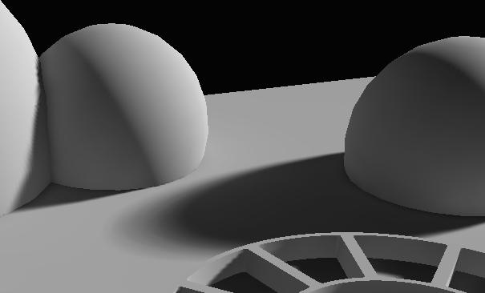

UDN
Search public documentation:
Lightmass
日本語訳
中国翻译
한국어
Interested in the Unreal Engine?
Visit the Unreal Technology site.
Looking for jobs and company info?
Check out the Epic games site.
Questions about support via UDN?
Contact the UDN Staff
中国翻译
한국어
Interested in the Unreal Engine?
Visit the Unreal Technology site.
Looking for jobs and company info?
Check out the Epic games site.
Questions about support via UDN?
Contact the UDN Staff
UE3 Home > Lighting & Shadows > Lightmass Static Global Illumination
UE3 Home > Level Designer > Lightmass Static Global Illumination
UE3 Home > Lighting Artist > Lightmass Static Global Illumination
UE3 Home > Level Designer > Lightmass Static Global Illumination
UE3 Home > Lighting Artist > Lightmass Static Global Illumination
Lightmass Static Global Illumination
Document Changelog: Created by Daniel Wright.
Overview
Versions
Legacy Support
Getting old UE3 lighting in a new map
As of QA_APPROVED_BUILD_JUNE_2009, new maps will use Lightmass and global illumination by default. This is controlled bybUseGlobalIllumination under View->World Properties->Lightmass in UnrealEd. It is also accessible through the Lighting Build Options dialog in UnrealEd. To get old UE3 lighting, simply disable bUseGlobalIllumination.
Converting an existing map to use Lightmass
Maps created before Lightmass was integrated will havebUseGlobalIllumination set to false, and will continue to use the old UE3 static lighting path. Here are the steps needed to convert an existing level:
- Set
bUseGlobalIlluminationto true or checked. - Place one or more LightmassImportanceVolumes around the part of your level that needs detailed global illumination. The radius of these volumes combined will have a huge impact on your build time, so try to encompass the important parts of your level as tightly as possible.
- Disable or delete any fill lights in the level. Lightmass will calculate light bounces, so you only need to keep the dominant lights. Sky lights are much less useful with Lightmass and they just decrease your potential contrast, so it's best to disable these too if they were being used as an ambient term. Fill lights can of course be kept for more artistic control.
Lightmass Features
Area lights and shadows
With old UE3 static lighting, lights did not have any surface area. They were treated as if all light was being emitted from a single point (or a single direction, for directional lights). Area shadows were approximated by filtering the shadow results in the lightmap texture, which means the shadow penumbra sharpness was dependent on the lightmap resolution, and the penumbra size was the same across all surfaces with the same lightmap resolution. With Lightmass, all lights are area lights by default. The shape used by Point and Spot light sources is a sphere, whose radius is set by LightSourceRadius under LightmassSettings. Directional light sources use a disk, positioned at the edge of the scene. Light source size is one of the two factors controlling shadow softness, as larger light sources will create softer shadows. The other factor is distance from the receiving location to the shadow caster. Area shadows get softer as this distance increases, just like in real life. In the first image is a directional light with the old UE3 static lighting, the penumbra size is the same everywhere. In the second image, Lightmass calculated area shadows whose sharpness is controlled by both the light source size and occluder distance. Notice how the shadow of the pillar is much sharper close to where the pillar meets the ground. The light source radius for point and spot lights is drawn in yellow wireframe, while the influence radius is drawn in teal. In most cases you will want to make sure the light source doesn't intersect any shadow casting geometry, or the light will be emitting on both sides of that geometry.Signed Distance Field shadows
Lightmass can generate precomputed shadow maps in a different encoding, see the DistanceFieldShadows page for more info.Diffuse Interreflection
Diffuse Interreflection is by far the most visually important global illumination lighting effect. Light bounces by default with Lightmass, and the Diffuse term of your material controls how much light (and what color) bounces in all directions. This effect is sometimes called color bleeding. It's important to remember that diffuse interreflection is incoming light reflecting equally in all directions, which means that it is not affected by the viewing direction or position. Here's a scene built by Lightmass with a single directional light and only direct lighting shown. Notice how the size of the shadow penumbras depends on the distance of the occluder. The areas that are not directly visible to the light are black. This is the result without global illumination. This is what the first diffuse global illumination bounce looks like. Notice the shadow behind the chair on the left, this is called an indirect shadow because it is the shadow of the indirect light. The brightness and color of the diffuse bounce depends on the incoming light and the diffuse term of the material that the light interacts with. Each bounce is darker than the previous, since some of the light gets absorbed by surfaces instead of being reflected. The pillar bases get more indirect light than other surfaces because they are closer to the areas in direct light. This is the second diffuse bounce. The light has become much more attenuated and evenly distributed. And here is the scene with four diffuse bounces combined. Simulating global illumination creates much more detailed and realistic lighting than manually placing fill lights. Indirect shadows in particular are not possible with fill lights. Bounced lighting picks up the diffuse color of the underlying material, as you can see below. This is where the term 'color bleeding' comes from. Color bleeding is most noticeable with highly saturated colors. You can exaggerate the effect by raising DiffuseBoost on the primitive, material or level.Character lighting
Lightmass places samples in a uniform 3d grid inside the LightmassImportanceVolume at a low resolution, and also on top of upward facing surfaces that characters are likely to walk on, at a higher resolution. Each lighting sample captures indirect lighting from all directions, but not direct lighting. The first image is a debug visualization of lighting samples placed above the floor, the second image is the same scene in Lit mode. Notice how the samples above the red tapestry picked up the red bounced light. The samples are visualized as a single color, but they really capture lighting from all directions. LightEnvironments then lookup the indirect lighting at the position of the actor using these lighting samples. The indirect lighting affects the color of the light environment shadow, but not the direction. The character below is lit with the first bounce global illumination from the stairs below.Limitations
- Currently the light samples can use a lot of memory, their placement could be optimized by having more knowledge about where detailed indirect lighting is needed on characters (i.e. the play area).
- Dynamically lit objects not using light environments will only be affected by direct lighting.
- Light environments outside the LightmassImportanceVolume will have black indirect lighting.
Mesh Area Lights from Emissive
The emissive input of any material you apply to a static object can be used to create mesh area lights. Mesh area lights are similar to point lights, but they can have arbitrary shape and intensity across the surface of the light. Each positive emissive texel emits light in the hemisphere around the texel's normal based on the intensity of that texel. Each neighboring group of emissive texels will be treated as one mesh area light that emits one color. The first image shows only the emissive of the underlying materials, and the second image shows the result of the 4 mesh area lights created from those emissive texels (four lights are created because there are four neighboring patches of positive emissive texels). By default, mesh area lights will NOT be created from emissive areas. To enable them, check the bUseEmissiveForStaticLighting flag that can be found under the LightmassSettings group of any primitive component. For BSP surfaces, the option is under surface properties. TheEmissiveLightFalloffExponent setting allows you to control the falloff of the light emitted. It behaves just like a point light's falloff exponent, larger exponents result in light attenuating more quickly as it gets toward the influence radius of the light. The influence radius of a mesh area light is determined automatically based on the brightness of the light along with the size of the light's emissive surface area. EmissiveBoost scales the intensity of all emissive texels, which also affects the influence radius.
Note that mesh area lights add to your build time, they have about the same build time impact as a point light. Mesh area lights with a smaller influence radius will be faster to calculate lighting for.
Limitations
- Mesh area lights on meshes with a lot of triangles will increase build times. A warning is issued for meshes with > 3000 triangles, and meshes with > 5000 triangles will not be used as a mesh area light regardless of bUseEmissiveForStaticLighting.
Translucent shadows
Light passing through a translucent material that is applied to a static shadow casting mesh will lose some energy, resulting in a translucent shadow.Translucent shadow color
The amount of light passing through the material is calledTransmission (different from TransmissionColor and TransmissionMask in the material editor, which operate on opaque materials), and ranges between 0 and 1 for each color channel. A value of 0 would be fully opaque, and a value of 1 would mean that the incident light passes through unaffected. There's no material input for Transmission, so currently it is derived from the other material inputs as follows:
- Lit materials
- BLEND_Translucent and BLEND_Additive: Transmission = Lerp(White, Diffuse, Opacity)
- BLEND_Modulate: Transmission = Diffuse
- Unlit materials
- BLEND_Translucent and BLEND_Additive: Transmission = Lerp(White, Emissive, Opacity)
- BLEND_Modulate: Transmission = Emissive
Translucent shadow sharpness
There are several factors controlling translucent shadow sharpness. In the first image is a large light source was used (directional light with a LightSourceAngle of 5) and in the second, a small light source was used (LightSourceAngle of 0). In the first image, a small light source was used, but the lightmap resolution was too low to capture the sharp translucent shadows. In the second image, the material was exported at too low of a resolution (controlled byExportResolutionScale in the material editor) to capture the sharp shadows.
Indirect light is also affected by translucent materials. The window in this image filters incoming light based on its Transmission, and that light then bounces around the scene with its color modified.
Limitations
- Translucent materials currently do not scatter light, so they will not bleed color onto objects around them.
- The first diffuse bounce is currently not affected by translucent shadows. This means that first bounce indirect light passing through a translucent material will not be filtered by the material's Transmission.
- Refraction (caustics from transmission) is currently not supported.
Masked shadows
Lightmass takes the opacity mask of BLEND_Masked materials into account when calculating shadows. The part of the material that gets clipped in the editor viewports also does not cause any shadowing, which allows much more detailed shadowing from trees and foliage.Ambient Occlusion
Lightmass calculates detailed indirect shadows automatically, but it can be useful to exaggerate indirect shadows for artistic purposes or to enhance the perception of proximity in a scene. Ambient occlusion is the indirect shadowing you would get from a uniformly bright upper hemisphere, like an overcast sky. Lightmass supports calculating ambient occlusion, applying it to direct and indirect illumination, and then baking it into lightmaps. Ambient occlusion is disabled by default, and can be enabled by checking next tobUseAmbientOcclusion in View->World Properties->Lightmass in UnrealEd.
In the first image is a scene with indirect lighting but no ambient occlusion. In the second image is the same scene with ambient occlusion applied to both the direct and indirect lighting, note the darkening where objects come together.

Ambient Occlusion settings: - bVisualizeAmbientOcclusion - Overrides lightmaps with just the occlusion factor when lighting is built. This is useful for seeing exactly what the occlusion factor is, and comparing the effects of different settings.
- MaxOcclusionDistance - Maximum distance for an object to cause occlusion on another object
- FullyOccludedSamplesFraction - Fraction of samples taken that must be occluded in order to reach full occlusion. Note that there is also a per-primitive FullyOccludedSamplesFraction, which allows controlling how much occlusion an object causes on other objects.
- OcclusionExponent - Higher exponents increase contrast
- First: Default AO settings (MaxOcclusionDistance of 200, FullyOccludedSamplesFraction of 1.0, OcclusionExponent of 1.0)
- Second: MaxOcclusionDistance of 5. Low frequency occlusion is removed, only occlusion in corners is left.
- Third: FullyOccludedSamplesFraction of 0.8. Occlusion is shifted darker across all ranges, any areas that were at 80% occluded or above saturate to black.
- Last: OcclusionExponent of 2. The occlusion transitions from midrange to saturated dark much more quickly, occlusion is pushed into corners.
Limitations
- Ambient Occlusion requires a fairly high lightmap resolution to look good, since it changes quickly in corners. Vertex lightmaps will give strange results, as large areas of meshes will be dark since vertices are often in the corners where ambient occlusion is the highest.
- Preview quality builds do not do a very good job at previewing ambient occlusion, since AO requires pretty dense lighting samples (just like indirect shadows).
Getting the best quality with Lightmass
Making lighting noticeable
Diffuse Textures
During rendering, lit pixel color is determined as Diffuse * Lighting, so diffuse color directly affects how visible the lighting will be. High contrast or dark diffuse textures make lighting difficult to notice, while low contrast, mid-range diffuse textures let the lighting details show through. Compare the lighting clarity between the scene in the first image, build with mid-range diffuse textures, to the scene in the second image also built with Lightmass, but with noisy, dark diffuse textures. Only the most high-frequency changes are noticeable in the scene in the second image, like the shadow transitions. The Unlit view mode is useful for viewing the Diffuse term. The scene in the first image looks flatter and more monotone in the Unlit view mode, which means the lighting is doing all the work and variations in final pixel color are mostly due to lighting differences. See the View Modes page for more information. Using the editor's color picker on several parts of the unlit image we can see that the scene in the first image has diffuse values around 0.5, while the scene in the second image has diffuse values around 0.08. Looking at the histogram of these unlit images in Photoshop gives a good idea of the distribution of the diffuse textures. NOTE: Photoshop shows you color values in gamma space, so a value of 186 (.73) is actually halfway between black and white, NOT a value of 127 (.5). The first image shows what the histogram should look like to get noticeable lighting.Lighting Setup
- Avoid skylights! Skylights add a constant ambient term to your level, which reduces contrast in indirectly lit areas.
- Setup lights so that there is high contrast between the directly lit areas and indirectly lit areas. The contrast will make it easier to pick out where shadow transitions are and will give your level a better sense of depth.
- Setup lights so that the bright areas are not too bright, and the dark areas are not completely black, but still have detail noticeable. It's important to check out the dark areas on the final target display.
Improving lighting quality
Lightmap resolution
Using texture lightmaps with high resolution is the best way to get detailed, quality lighting. Vertex lightmaps are tessellation dependent, so they usually cannot represent lighting details like area shadows, and instead they just show the general color of the area the mesh is in. Using high lightmap resolution has the downsides of taking up more texture pool memory and increasing build times, so it's a tradeoff. Ideally, most of the lightmap resolution should be allocated around the high visual impact areas and in places where there are high frequency shadows.Lightmass Solver quality
Lightmass Solver settings are automatically set appropriately based on what quality of build is requested in the Lighting Build Options dialog. Production should give good enough quality that the artifacts are not clearly noticeable with a diffuse texture applied. There is one setting that has a big impact on quality however, and that is StaticLightingLevelScale. Lowering the scale will generate many more indirect lighting samples, which will increase the quality of indirect lighting and shadowing, at the expense of build time. In most cases this is only useful for increasing the lighting scale for large levels.Getting the best lighting build times
- Only have high resolution lightmaps in areas that have high-frequency (quickly changing) lighting. Reduce the lightmap resolution for BSP and static meshes that are not in direct lighting or affected by sharp indirect shadows. This will give you high resolution shadows in the areas that are most noticable.
- Surfaces that are never visible to the player should be set to the lowest possible lightmap resolution.
- Use a LightmassImportanceVolume to contain the areas that are most important (just around the playable area).
- Optimize the lightmap resolutions across the map so that build time for meshes is more even. Use the LightmassTools#LightingTimings Dialog to find the slowest objects. The lighting build can never be faster than the slowest single object, regardless of how many machines are doing the distributed build.
Lightmass settings
LightmassImportanceVolume
Many maps have meshes out to the edge of the grid in the editor, but the actual playable area that needs high quality lighting is much smaller. Lightmass emits photons based on the size of the level, so those background meshes will greatly increase the number of photons that need to be emitted, and lighting build times will increase. The LightmassImportanceVolume controls the area that Lightmass emits photons in, allowing you to concentrate it only on the area that needs detailed indirect lighting. Areas outside the importance volume get only one bounce of indirect lighting at a lower quality. An overhead wireframe view of MP_Jacinto is shown in the first image. The actual playable area that needs high quality lighting is the small green blob at the center. In the second image, a closeup of the playable area of MP_Jacinto is shown, with the correctly setup LightmassImportanceVolume selected. The LightmassImportanceVolume reduced the radius of the region to light from 80,000 units to 10,000 units, which is 64x less area to light. LightmassImportanceVolumes are created just like any other volume, just place the builder brush where you want the volume to be created, then right-click the Add Volume button, and select LightmassImportanceVolume, as shown below. At this point, having multiple LightmassImportanceVolumes that bound the area to light more tightly is not a benefit, as lighting will be done using the bounding box that surrounds all of the importance volumes.Lighting Build Options dialog
- Build Quality - Controls how much time is spent building lighting and at what quality lighting is calculated. Preview is the fastest, lowest quality (but still representative) while Production is the slowest, highest quality that should be used for shipping levels. Each quality setting is about 3x slower than the one above it. Preview and Medium will show error coloring, but High and Production will not.
- Use Lightmass - Overrides the level's bUseGlobalIllumination for just this lighting build. Note: the level's bUseGlobalIllumination will not be permanently changed!
World Settings
- bUseGlobalIllumination - Whether the level should use Lightmass or old UE3 direct lighting. Starting with QA_APPROVED_BUILD_JUNE_2009, new maps will default to true and old maps will be set to false.
- StaticLightingLevelScale - Scale of the level relative to the scale of the game. This is used to decide how much detail to calculate in the lighting and smaller scales will greatly increase build times. The default is 1.0, meaning this level needs the same lighting scale rest of the game. A scale of 2 would mean the current level only needs to calculate indirect light interactions that are 2x bigger than the default, and lighting builds will be much faster. SP_Assault in Gears of War 2 is an example of when to use StaticLightingLevelScale. The level is huge (taking up 3/4ths of the grid in the editor) and most of the time you are driving through it, not walking, and detailed lighting is not noticeable. In this level a StaticLightingLevelScale of about 4.0 is appropriate, which greatly reduces build times.
- NumIndirectLightingBounces - Number of times light is allowed to bounce off surfaces, starting from the light source. 0 is direct lighting only, 1 is one bounce, etc. Bounce 1 takes the most time to calculate, followed by bounce 2. Successive bounces are nearly free, but also do not add very much light, as light attenuates at each bounce.
- EnvironmentColor - Color that rays which miss the scene will pick up. The environment can be visualized as a sphere surrounding the level, emitting this color of light in each direction.
- EnvironmentIntensity - Scales EnvironmentColor to allow an HDR environment color.
- EmissiveBoost - Scales the emissive contribution of all materials in the scene.
- DiffuseBoost - Scales the diffuse contribution of all materials in the scene. Increasing DiffuseBoost is an effective way to increase the intensity of the indirect lighting in a scene. The diffuse term is clamped to 1.0 in brightness after DiffuseBoost is applied, in order to keep the material energy conserving (meaning light must decrease on each bounce, not increase). If raising DiffuseBoost doesn't result in brighter indirect lighting, the diffuse term is being clamped and the Light's IndirectLightingScale should be used to increase indirect lighting instead.
- SpecularBoost - Scales the specular contribution of all materials in the scene. Currently unused.
- IndirectNormalInfluenceBoost - Lerp factor that controls the influence of normal maps with directional lightmaps on indirect lighting. A value of 0 gives a physically correct distribution of light, which may result in little normal influence in areas only lit by indirect lighting, but less lightmap compression artifacts. A value of .8 results in 80% of the lighting being redistributed in the dominant incident lighting direction, which effectively increases the per-pixel normal's influence, but causes more severe lightmap compression artifacts.
- bUseAmbientOcclusion - Enables static ambient occlusion to be calculated by Lightmass and built into your lightmaps
- DirectIlluminationOcclusionFraction - How much of the AO to apply to direct lighting
- IndirectIlluminationOcclusionFraction - How much of the AO to apply to indirect lighting
- MaxOcclusionDistance - Maximum distance for an object to cause occlusion on another object
- FullyOccludedSamplesFraction - Fraction of samples taken that must be occluded in order to reach full occlusion
- OcclusionExponent - Higher exponents increase contrast
- bVisualizeMaterialDiffuse - Override normal direct and indirect lighting with just the material diffuse term exported to Lightmass. This is useful when verifying that the exported material diffuse matches up with the actual diffuse.
- bVisualizeAmbientOcclusion - Override normal direct and indirect lighting with just the AO term. This is useful when tweaking ambient occlusion settings, as it isolates the occlusion term.
Light Settings
For more information on setting up lighting in UE3 view the Lighting Reference and Shadowing Reference pages.- IndirectLightingSaturation - 0 will result in indirect lighting being completely desaturated, 1 will be unchanged.
- IndirectLightScale - Scales the brightness of indirect lighting from this light. This is similar to DiffuseBoost in that it will change how much light gets bounced, but different in that it only changes how much light is emitted, not how much light gets attenuated at each bounce. Also, DiffuseBoost can only increase indirect lighting to a certain point, because Diffuse is clamped to keep its brightness below or equal to 1.0. IndirectLightScale can increase the indirect lighting intensity by any amount.
- LightSourceRadius - (Point and Spot lights only) The radius of the light's emissive sphere, NOT the light's influence, which is controlled by Radius. A larger LightSourceRadius will result in larger shadow penumbras.
- LightSourceAngle - (Directional lights only) The angle, in degrees, of the directional light's emissive disk from a receiver. Larger angles result in larger shadow penumbras. Note that this is the angle from the center of the directional light's disk to the edge of the disk, not from one edge to the other. The Sun's angle is about .25 degrees.
- ShadowExponent - Controls the falloff of shadow penumbras, or how fast areas change from fully lit to fully shadowed.
Primitive Component Settings
- DiffuseBoost - Scales the diffuse contribution of all materials applied to this object.
- EmissiveBoost - Scales the emissive contribution of all materials applied to this object.
- EmissiveLightExplicitInfluenceRadius - Direct lighting influence radius. The default is 0, which means the influence radius should be automatically generated based on the emissive light brightness. Values greater than 0 override the automatic method.
- EmissiveLightFalloffExponent - Direct lighting falloff exponent for mesh area lights created from emissive areas on this primitive.
- FullyOccludedSamplesFraction - Fraction of AO samples taken from this object that must be occluded in order to reach full occlusion on other objects. This allows controlling how much occlusion an object causes on other objects.
- bShadowIndirectOnly - If checked, this object will only shadow indirect lighting. This is useful for grass, since the geometry that is rendered is just a representation of the actual geometry and doesn't necessarily cast accurately shaped shadows. It's also useful for grass because the resulting shadows would be too high frequency to be stored in precomputed lightmaps.
- SpecularBoost - Scales the specular contribution of all materials applied to this object. Currently unused.
- bUseEmissiveForStaticLighting - Allows the mesh's material's emissive to be used to create Mesh Area Lights.
- bUseTwoSidedLighting - If checked, this object will be lit as if it receives light from both sides of its polygons.
Base Material Settings
For more information on the material editor see the Material Editor User Guide.- EmissiveBoost - Scales the emissive contribution of this material to static lighting.
- DiffuseBoost - Scales the diffuse contribution of this material to static lighting.
- SpecularBoost - Scales the specular contribution of this material to static lighting.
- ExportResolutionScale - Scales the resolution that this material's attributes are exported at. This is useful for increasing material resolution when details are needed.
Material Instance Contant Settings
For more information on the material instance editor see the Material Instance Editor User Guide.- EmissiveBoost - When checked, overrides the parent's EmissiveBoost.
- DiffuseBoost - When checked, overrides the parent's DiffuseBoost.
- SpecularBoost - When checked, overrides the parent's SpecularBoost.
- ExportResolutionScale - When checked, overrides the parent's ExportResolutionScale.